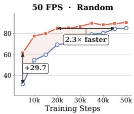

arXiv 新增 · P0 · 2026-06-10
Next Forcing：它把“预测未来 latent/dynamics”作为核心训练信号，是 V-JEPA、VideoMAE 之后视频自监督与 world model 路线的自然延伸
把视频自回归 world model 的监督从单个当前 chunk 扩成多尺度未来监督，试图同时改善训练收敛、长期动态建模和推理速度。
编号2606.11187
优先级P0
类别arXiv 新增
会议arXiv 新增
方法在 causal video/world action model 中加入 multi-chunk prediction objective，让辅助 MCP 模块同时预测 next^1、next^2、next^3 等未来 chunk，并把不同深度的 intermediate features 融合进未来动态预测。
来源arXiv / OpenReview
先说结论。它把“预测未来 latent/dynamics”作为核心训练信号，是 V-JEPA、VideoMAE 之后视频自监督与 world model 路线的自然延伸。 把视频自回归 world model 的监督从单个当前 chunk 扩成多尺度未来监督，试图同时改善训练收敛、长期动态建模和推理速度。


核心问题
它把“预测未来 latent/dynamics”作为核心训练信号，是 V-JEPA、VideoMAE 之后视频自监督与 world model 路线的自然延伸。
方法拆解
在 causal video/world action model 中加入 multi-chunk prediction objective，让辅助 MCP 模块同时预测 next^1、next^2、next^3 等未来 chunk，并把不同深度的 intermediate features 融合进未来动态预测。
主要贡献
把视频自回归 world model 的监督从单个当前 chunk 扩成多尺度未来监督，试图同时改善训练收敛、长期动态建模和推理速度。
实验看点
摘要强调该方法面向高帧率 autoregressive video generation 的收敛慢、精度不足和迭代去噪慢三个痛点；核心亮点是让近未来预测为更远未来提供链式条件。
局限与读法
目前仍是 video generation/world action model 语境，和通用视频 encoder 的线性 probe、检索、VLM downstream 表现之间还需要建立直接证据。